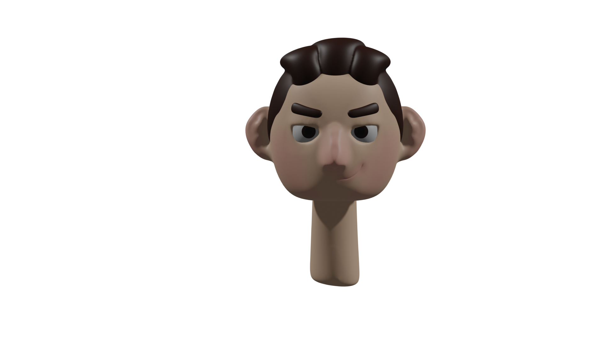

Welcome to My Portfolio

Web Development
While pursuing my BSc (Honours) in Creative Computing, I had to work on multiple web development projects that helped improve my technical and creative skills. These projects helped spark my interest in web development.

Image Processing
While studying Creative Computing, I developed a strong foundation in graphic design and image processing. I applied these skills to different projects that helped show and improve my creative and technical skills. These projects also helped me find my design style.

3D Models
I spent my spare time creating 3D models, further exploring my passion for design.